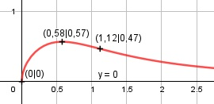

Aufgabe 135 x0,5 f(x) = -------- = -------- x2 + 1 x2 + 1 Quotientenregel erste Ableitung: u = x0,5, u' = 0,5 * x-0,5 v = x2 + 1, v' = 2x 0,5 * x-0,5 * (x2 + 1) - 2x * x0,5 f'(x) = ------------------------------------ (x2 + 1)2 0,5 * (x2 + 1) ----------------- - 2x * x0,5 x0,5 f'(x) = -------------------------------- (x2 + 1)2 0,5x2 + 0,5 - 2x2 f'(x) = ------------------------- x0,5 * (x2 + 1)2 0,5 - 1,5x2 f'(x) = ------------------ x0,5 * (x2 + 1)2 (0,5 - 1,5x2) * x-0,5 f'(x) = ----------------------- (x2 + 1)2 0,5 * x-0,5 - 1,5 * x1,5 f'(x) = --------------------------- (x2 + 1)2 Quotientenregel zweite Ableitung: u = 0,5 * x-0,5 - 1,5x1,5 u' = -0,5 * 0,5 * x-1,5 - 1,5 * 1,5 * x0,5 u' = -0,25 * x-1,5 - 2,25 * x0,5 v = (x2 + 1)2 Kettenregel: v' = 2 * 2x * (x2 + 1) = 4x * (x2 + 1) (-0,25*x-1,5 - 2,25x0,5) * (x2 + 1)2 f''(x) = -------------------------------------- - (x2 + 1)4 4x*(x2 + 1)*(0,5x-0,5 - 1,5x1,5) - ----------------------------------- (x2 + 1)4 f''(x) = (x2 + 1) * (-0,25x-1,5-2,25x0,5)*(x2+1) - 2x0,5 + 6x2,5 * ---------------------------------------------- (x2 + 1)4 -0,25x0,5 - 2,25x2,5 f''(x) = (x2 + 1) * ---------------------- - (x2 + 1)4 0,25*x-1,5 - 2,25*x0,5 - 2x0,5 + 6x2,5 - ----------------------------------------- (x2 + 1)4 3,75x-2,5 - 4,5x0,5 - 0,25x-1,5 f''(x) = -------------------------------- (x2 + 1)3 Zur Beurteilung, ob f'''(x) ≠ 0: (Begründung siehe Aufgabe 105) u = 3,75x-2,5 - 4,5x0,5 - 0,25x-1,5, u' = 9,375x1,5 + 2,25x-0,5 + 0,375x-2,5 u' f'''(x) = --- v 9,375x1,5 + 2,25x-0,5 + 0,375x-2,5 f'''(x) = ------------------------------------ (x2 + 1)3 ≠ 0 für alle x ≠ 0 x muss ≥ 0 sein wegen Quadratwurzel Definitionsbereich: 0 ≤ x < ∞ Wertebereich: f(x) wird dann am größten, wenn x = 0,58 (Extremum) Verhalten im Unendlichen: -------- geht gegen 0 für x --> ∞ x2 + 1 f(0,58) = 0,57 --> 0 < f(x) ≤ 0,57 Symmetrie: f(-x) = ---------- = ---------- ≠ f(x) (-x)2 + 1 x2 + 1 --> keine Achsensymmetrie -f(-x) = - -------- ≠ f(x) x2 + 1 --> keine Punktsymmetrie Nullstellen: f(x) = 0 -------- = 0 |*(x2 + 1) x2 + 1 = 0 |2 x = 0 N(0|0) Schnittpunkt mit der y-Achse: x = 0 f(0) = -------- 02 + 1 Sy(0|0) Extrempunkte: f'(x) = 0 0,5 * x-0,5 - 1,5 * x1,5 -------------------------- = 0 |*(x2 + 1)2 (x2 + 1)2 0,5 * x-0,5 - 1,5 * x1,5 = 0 0,5 * x-0,5 * (1 - 3x2) = 0 0,5 ------ * (1 - 3x2) = 0 x0,5 0,5 ------ = 0 |*x0,5 x0,5 0,5 = 0 --> Widerspruch --> keine Lösung 1 - 3x2 = 0 | +3x2 3x2 = 1 |:3 x2 = 1/3 |ⱱ x1,2 = ± 0,58 x1 = 0,58, f(0,58) = ------------ = 0,57 0,582 + 1 x2 = -0,58 außerhalb des Definitionsbereiches 3,75*(0,58)2,5 - 4,5*(0,58)0,5 f''(0,58) = --------------------------------- - (0,582 + 1)3 0,25*(0,58)-1,5 - ------------------ = -1,11 < 0 (0,582 + 1)3 --> Hochpunkt(0,58|0,57) Wendepunkte: f''(x) = 0 3,75x-2,5 - 4,5x0,5 - 0,25x-1,5 -------------------------------- = 0 |*(x2 + 1)3 (x2 + 1)3 3,75 * x-2,5 - 4,5 * x0,5 - 0,25 * x-1,5 = 0 0,25*x-1,5*(15*x4 - 18*x2 - 1) = 0 |:(0,25*x-1,5) 15x4 + 18x2 - 1 = 0 Substitution x2 = z 15z2 - 18z - 1 = 0 A = 15, B = -18, C = -1 z1,2 = z1,2 = z1,2 = 18 ± 19,6 z1,2 = ------------ 30 z1 = 1,25 z2 = -0,05 keine Lösung Rücksubstitution: x2 = 1,25 |ⱱ x1,2 = ± 1,12 x1 = 1,12 f(1,12) = ------------ = 0,47 WP(1,12|0,47) 1,122 + 1 x2 = -1,12 außerhalb des Definitionsbereiches Graph:
